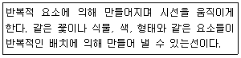
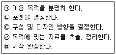

화훼장식기사 (2008-07-27 기출문제)
1과목: 화훼재료 및 형태학
1. 관엽식물류가 아닌 것은?
- Limonium sinuatum Mill
- Rhapis excelsa Wendl
- Ficus elastica Roxb
- Monstera deliciosa Liebm
(정답률: 72%)

2. 글라디올러스는 화아발달 도중에 외부 환경적 영향에 의하여 화아발달이 정지하는 현상, 즉 블라스팅(blasting)현상이 나타난다. 그 원인에 해당되지 않는 것은?
- 정식 후의 낮은 지온
- 건조
- 광도부족
- 장일조건
(정답률: 79%)
3. 소엽이 엽병에 방사상으로 붙어 있는 장상복엽 형태의 잎을 가지고 있지 않는 것은?
- 루피너스
- 스위트피
- 클레마티스
- 남천
(정답률: 58%)
4. 춘식구근에 속하지 않는 것은?
- Narcissus tazetta L
- Canna × generalis Bailey
- Gladiolus gandavensis Van Houtte
- Dahlia hybrida Hort
(정답률: 59%)
5. 관엽식물의 특징에 대한 설명으로 틀린 것은?
- 개화(開花)하지 않는다.
- 열대 및 아열대 식물이 많다.
- 약광하에서 생육이 좋은 편이다.
- 주로 영양번식 식물이 많다.
(정답률: 82%)
6. 학명 표기법에 대한 설명으로 틀린 것은?
- 속명과 명명자의 첫 글자는 대문자를 사용한다.
- 학명은 정자체로 쓰며, 굵고 진하게 써야 한다.
- 속명과 종명을 기재하는 이명법을 사용한다.
- 라틴어로 쓰여지고 라틴어 발음으로 읽는다.
(정답률: 78%)
7. 상록성 화목류로 관상가치가 높아 꽃과 열매를 같이 감상할 수 있는 것은?
- 매화나무
- 산딸나무
- 히어리
- 익소라
(정답률: 65%)
8. 토분에 비하여 플라스틱 화분의 장점은?
- 통기성이 양호하다.
- 식물생장에 비교적 유리하다.
- 관리가 간편하다.
- 화분내 온도변화가 적다.
(정답률: 74%)
9. 빛의 길이에 의해 식물의 개화반응이 유도되는 현상을 무엇이라 하는가?
- 광주성
- 광형태형성
- 춘화현상
- 탈춘화현상
(정답률: 63%)
10. 난과 식물이 아닌 것은?
- 덴파레
- 접란
- 풍란
- 호접란
(정답률: 69%)
11. 햇빛이 잘 드는 창가나 처마 또는 담장과 벽에 걸어서 빈 공간을 장식하는 것은?
- 테라리움
- 행잉바스켓
- 포푸리
- 비바리움
(정답률: 81%)
12. 비내한성 1년초 식물에 대한 일반적인 설명으로 틀린 것은?
- 춘파한다.
- 고온에서 잘 자란다.
- 원산지가 열대지방인 것이 많다.
- 장일식물이 많다.
(정답률: 57%)
13. 외피없이 여러 개의 인편(scale)으로 구성된 인경(bulb)을 가지며 지상부 줄기에 주아(bulbil)를 가지는 식물은?
- 튤립
- 히아신스
- 참나리
- 아네모네
(정답률: 74%)
14. 합판화가 아닌 것은?
- 튤립
- 초롱꽃
- 페튜니아
- 나팔꽃
(정답률: 71%)
15. 분화식물의 신선도 유지를 위한 설명으로 옳은 것은?
- 실내에서는 가급적 직사광선이 비치는 밝은 곳에 두는게 좋다.
- 어느 식물이든지 물은 조금씩 자주 주는 것이 좋다.
- 스킨답서스, 네프로네피스, 테이블야자는 에틸렌 가스에 민감하므로 신선도 유지에 특히 주의해야 한다.
- 고광도에서 자란 식물도 단계적으로 광순화 처리를 하면 신선도 유지에 효과가 있다.
(정답률: 74%)
16. 주로 꽃을 이용하는 허브로만 짝지어진 것은?
- 보리지, 세이지, 민트
- 바질, 레몬밤, 로즈마리
- 라벤더, 장미, 케모마일
- 캐러웨이, 생강, 마늘
(정답률: 77%)
17. 화훼류의 생육을 조절하는 방법이 아닌 것은?
- 화학제(왜화제)살포
- 물리적 진동
- DIF 처리
- r - 선 조사
(정답률: 70%)
18. 화훼류의 춘화처리에 가장 중요한 조건은?
- 온도
- 일장
- 습도
- CO2
(정답률: 60%)
19. 채우기 꽃으로 이용되는 소재로 거리가 먼 것은?
- Gypsophila paniculata L
- Limonium sinuatum Mill
- Helianthus annuus L
- Limonium caspium Dumort
(정답률: 79%)
20. 기후형에 의한 생태적 분류가 잘못 연결된 것은?
- 지중해 기후형 - 시클라멘
- 대륙서안 기후형 - 데이지
- 대륙동안 기후형 - 수선화
- 열대고지 기후형 - 다알리아
(정답률: 67%)
2과목: 화훼품질유지 및 관리론
21. 민달팽이에 대한 설명으로 틀린 것은?
- 직접 잡거나 먹이용 약제로 구제한다.
- 화분 속에 살아서 구제하기가 어렵다.
- 화분 속 어두운 곳에 있다가 낮에 활동한다.
- 잎, 꽃, 줄기 등을 갉아 먹어 품질을 저하시킨다.
(정답률: 69%)
22. 절화 저장 방법으로 바람직하지 못한 것은?
- 호흡량이 높은 과일과 함께 저장
- 저장 전에 STS를 침지처리
- 0~6℃의 저온과 90~95%의 습도를 유지
- 저장 직후에는 sucrose 용액에 침지처리
(정답률: 60%)
23. 다음 중 식물노화호르몬인 에틸렌에 가장 민감한 꽃은?
- 안스리움
- 거베라
- 튤립
- 카네이션
(정답률: 57%)
24. 수분과 탄수화물의 저장에 특히 관련이 있으며, 식물의 줄기와 가지를 튼튼하게 하고 병해충에 대한 저항력을 높여주는 비료 성분은?
- 질소
- 인산
- 마그네슘
- 칼륨
(정답률: 60%)
25. 물에 꽂으면 줄기 끝이 갈라지므로 탄화처리(carbonizing)가 필요한 것은?
- 수선화
- 튤립
- 아마릴리스
- 델피니움
(정답률: 58%)
26. 마이크로 플라스틱 튜브 끝에서 물방울이 똑똑 떨어지거나 천천히 흘러나오도록 관수하는 방법은?
- 저면관수
- 점적관수
- 지중관수
- 미스트관수
(정답률: 78%)
27. 절화의 수송을 위한 포장상자의 재료로 이용되려면 여러 기능이 고려되어야 하는데, 이에 해당되지않는 것은?
- 온도 유지
- 에틸렌 제거
- 이슬 맺힘 유도
- 탈취 및 살균
(정답률: 62%)
28. 설탕 5%와 8-HQC 200ppm이 함유된 절화본존제를 만들려고 한다. 1L당 첨가해야 할 양은?
- 설탕 500g, 8-HQC 200mg
- 설탕 500g, 8-HQC 20mg
- 설탕 50g, 8-HQC 200mg
- 설탕 50g, 8-HQC 20mg
(정답률: 67%)
29. 절화의 포장에 관한 설명으로 틀린 것은?
- 포장의 목적은 유통 중 물리적 손상, 수분손실 및 다양한 외부환경 등으로부터 절화의 보호를 목적으로 한다.
- 유통 중 다양한 외부환경 등으로부터 보호하기 위하여 소포장화 및 내포장재 이용이 필요하다
- 포장을 하여 신선도 유지 및 고품질화에 효과적으로 이용할 수 있다.
- 포장은 국내 및 국외수출용 포장이 구분되어 있지 않고 일률적으로 이용할 수 있다.
(정답률: 67%)
30. 화아분화에 대한 설명으로 옳은 것은?
- 생식생장에서 영양생장으로의 형태적 전환이 일어난다.
- 경정분열조직은 엽원기를 형성한다.
- 화기는 암술, 수술, 꽃잎, 꽃받침 순으로 분화한다.
- 경정분열조직의 비대가 일어난다.
(정답률: 65%)
31. 식물 휴면의 유도와 유지에 결정적으로 관여하는 것은?
- ABA
- GA
- BA
- IAA
(정답률: 67%)
32. 절화는 수확 후, 운송과 저장 그리고 소비자에 이르기까지 품질을 유지시키기 위하여 보존용액을 사용하는데, 이 보존용액에 포함되지 않는 것은?
- 탄수화물
- 살균제
- 에틸렌발생 억제제
- 옥신
(정답률: 58%)
33. 국화를 삽목할 때 삽목 용토의 pH로 가장 적당한 것은?
- pH 4.0~4.8
- pH 4.9~5.8
- pH 5.9~6.9
- pH 7.0~7.9
(정답률: 50%)
34. 다음 절화의 평가 내용 중 외적품질 요소가 아닌 것은?
- 절화의 형태
- 절화의 수명
- 절화의 화색
- 절화의 경엽
(정답률: 77%)
35. 화훼식물의 주요 병해에 대한 설명으로 틀린 것은?
- 식물 바이러스는 기계적 접촉 등에 의해 생긴 상처를 통해 감염된다.
- 잿빛곰팡이병은 꽃에 수침상의 갈색반점을 만들며, 잿빛 곰팡이를 형성한다.
- LSV(Lily Symptomless Virus)는 진딧물에 의해 감염된다.
- 장미의 근두암종병은 진균에 의한 감염이다.
(정답률: 65%)
36. 가정에서의 절화 관리를 바르게 설명한 것은?
- 직사광선은 피하고 절화수명, 꽃봉오리 발육, 잎의 신선도에 유리한 분산광을 이용한다.
- 화병에 꽂을 때 줄기 절단면을 10cm 이상의 깊은 물에 잠기도록 한다.
- 절화보존제를 사용할 때는 화병의 물은 매일 갈아야한다.
- 화병 속의 절화는 서늘한 온도에서 수명이 오래가며, 밤 동안에는 고온이 유리하다.
(정답률: 58%)
37. 증산작용과 관련된 설명으로 틀린 것은?
- 밤이 낮보다 활발히 일어난다.
- 바람이 불면 활발해진다.
- 기공의 개폐와 관련이 있다.
- 엽온을 조절하는 기능이 있다.
(정답률: 57%)
38. 건생식물의 특징이 아닌 것은?
- 줄기나 잎의 통기조직이 잘 발달되어 있다.
- 잎이 좁고 두껍거나 각피질이 잘 발달되어 있다.
- 잎 표면에 수분 증발을 억제할 수 있는 구조가 있다.
- 저수 조직이 발달되어 있다.
(정답률: 58%)
39. 분화의 품질 기준으로 거리가 먼 것은?
- 화분의 크기
- 식물의 초장과 꽃수
- 화분과 식물의 균형
- 화분의 재질과 아름다움
(정답률: 57%)
40. 식물의 생장속도와 온도에 대한 설명으로 옳은 것은?
- 생장속도가 최대로 되는 점을 최고온도라고 한다.
- 최적온도는 화훼의 종류, 품종에 따라 다르다.
- 같은 품종일 경우 생장단계와 관계없이 최적온도는 일정하다.
- 야간온도는 주간보다 10℃이상 낮을 때 생장속도가 가장 빨라진다.
(정답률: 53%)
3과목: 화훼장식학
41. 분식물 장식에 관한 설명으로 틀린 것은?
- 풍란은 석부작, 목부작에 적합한 착생란이다.
- 공중걸이는 실내외 공간을 장식하는 방법이다.
- 테라리움과 공중걸이는 관수에 유의해야 한다.
- 테라리움은 디쉬가든에 비해 식물선택의 폭이 넓다.
(정답률: 70%)
42. 콜라쥬에 대한 설명으로 틀린 것은?
- 콜라쥬는 색종이 조각을 붙여 장식적인 도안을 만든 것에서 비롯되었다.
- 화면에 인쇄물, 천, 쇠붙이, 나뭇조각, 조개, 나뭇잎 등 여러 가지를 붙여서 구성하는 회화기법의 의미로 사용되고 있다.
- 질감변화를 이용하는 대표적인 방법이다.
- 질감표현을 강조하기 때문에 사용되는 재료가 한정되어 있다.
(정답률: 84%)
43. 건조방법에 대한 특징으로 옳은 것은?
- 자연건조 - 변색이 적어 많은 종의 꽃에서 아름다운 색을 유지할 수 있다.
- 누름건조 - 꽃이나 잎을 흡수지 사이에 넣어 입체적으로 건조시키는 방법이다.
- 매몰건조 - 처리 후 유연성이 증가되어 장식과 보관에 편리하다.
- 동결건조 - 수축과 쭈그러짐이 거의 없으며 색상도 그대로 유지된다.
(정답률: 77%)
44. 수경재배에 많이 이용하는 배지(培地)에 해당하는 것은?
- 숯
- 하이드로볼
- 바크
- 암석
(정답률: 60%)
45. 신부화의 제작순서로 가장 바람직한 것은?
- 전문가로서의 의견제시→선호도와 디자인 파악 →신부에 대한 정보파악→디자인 결정→제작→상품전달
- 전문가로서의 의견제시→신부에 대한 정보파악→디자인결정→선호도와 디자인 파악→제작→상품전달
- 신부에 대한 정보파악→선호도와 디자인 파악→전문가로서의 의견제시→디자인 결정→제작→상품전달
- 신부에 대한 정보파악→디자인 결정→전문가로서의 의견제시→선호도와 디자인파악→제작→상품전달
(정답률: 83%)
46. 절화장식에 관한 설명으로 옳은 것은?
- 카틀레아는 주로 라인플라워로 사용된다.
- 글리세린은 스켈톤잎의 엽육제거에 이용된다.
- 신랑의 가슴에 다는 꽃을 코로넷이라 한다.
- 터지머지, 클러스터 부케는 원형부케이다.
(정답률: 64%)
47. 구조물(프레임) 제작에 관한 설명으로 틀린 것은?
- 입체적이며 볼륨감 있는 3차원적인 작품을 만들기에 용이하다.
- 재료에 따라 반영구적으로 사용 할 수 있다.
- 식물소재를 이용하여 구조물을 만들 때는 제작 직전 물올림을 하여 사용해야 한다.
- 공간 구성으로 인테리어 영역에 적용할 수있다.
(정답률: 62%)
48. 플로랄 폼과 관련된 설명으로 거리가 먼 것은?
- 흡수성과 비흡수성 폼으로 구분되는 화학제품이다.
- 천천히 물을 흡수하게 하는 것이 좋다.
- 비흡수성 플로랄 폼을 사용할 때는 콜드글루(cold glue)가 좋다.
- 버릴 때는 물을 꼭 짜서 버린다.
(정답률: 63%)
49. 포멀 리니어(formal linear) 디자인의 꽃다발에 대한 설명으로 틀린 것은?
- 적은 종류와 적은 양으로 최대 효과를 가진다.
- 일반적으로 대칭 형태이므로 강조부분은 강한색을 사용한다.
- 선과 면, 선과 형태 등의 대조를 통해 강한 긴장감을 유발한다.
- 특수한 선과 형태를 가진 소재를 사용하는 것이 좋다.
(정답률: 67%)
50. 자연적인 형식으로 자연을 본 따서 정원처럼 다양한 풍경을 표현한 디자인은?
- 피닉스(Phoenix)
- 워터폴(Water fall)
- 랜드스케이프(Landscape)
- 밀드플레(Mille de fleur)
(정답률: 65%)
51. 화훼장식의 건축적 기능에 대한 설명으로 옳은 것은?
- 식물은 광합성과 호흡으로 인한 가공의 개폐시 증산작용이 일어나 수분이 방출되어 실내 습도를 조절한다.
- 사무공간에서 칸막이 대신에 식물을 이용하거나, 은밀한 공간을 형성하기 위한 부분적인 차폐를 위해 울타리 또는 차단물로서 식물을 배치한다.
- 호텔 아트리움에 조성된 실내정원이 바라보이는 방은 비싸도 호텔 투수객이 선호한다.
- 분식물의 관리를 위한 관수, 시비 등은 신체적인 움직임을 유도한다.
(정답률: 63%)
52. 고대 이집트와 로마시대부터 경축의 용도로 사용되었으며, 길이가 길고 유연성이 있어 기둥, 난간, 벽, 천장 등에 장식할 수 있는 화훼장식물은?
- 화환(wreath)
- 갈란드(garland)
- 토피어리(topiary)
- 플라워 볼(flower ball)
(정답률: 72%)
53. 도구의 보관에 대한 설명 중 옳은 것은?
- 절단 와이어 : 끝 부분을 정리하여 습한 곳에 보관한다.
- 꽃 가위 : 깨끗이 씻은후 잘 말려 통에 넣거나 못에 걸어 사용한다.
- 건조재료 : 창가에 있는 유리장이나 서랍장에 보관한다.
- 글루스틱 : 언제든 사용할 수 있도록 글루건에 끼운채 콘센트에 꽂아 보관한다.
(정답률: 75%)
54. 건조소재의 선택에 대한 설명으로 틀린 것은?
- 꽃, 잎, 줄기, 과실, 종자, 뿌리 등의 각 기관을 건조시킬 수 있으나, 그 기관 자체 내에 수분 함유량이 소량인식물만 건조가 가능하다.
- 물이 필요 없는 장식이므로 액자, 벽장식, 디스플레이 등 장소와 위치에 구애 받지 않고 폭넓게 사용이 가능하다.
- 건조소재로 채취할 수 있는 소재로는 종자를 파종해서 재배한 식물과 야생식물이 있는데 재배소재는 관리, 수확시기를 조절할 수 있으나 야생소재는 조절이 불가능하다.
- 이삭을 이용하나 소재로는 라이그래스, 밀, 강아지풀 등이 있다.
(정답률: 60%)
55. 한국 화훼장식의 역사에 대한 설명으로 거리가 먼 것은?
- 한국 전통꽃꽂이는 기교성을 최대한 강조하여 표현하는 것이 특징이다.
- 전통꽃꽂이의 근원은 고대의 자연숭배 사상에 있다.
- 전통꽃꽂이에는 선적인 표현양식과 양감적인 표현양식이 있다.
- 현대 화훼장식은 외국의 디자인을 도입하고 전통 화훼, 장식을 현대적 감각에 맞게 변형시켜 새로운 양식으로 창조되고 있다.
(정답률: 60%)
56. 빅토리아 시대의 화훼장식에 대한 설명으로 틀린 것은?
- 꽃과 식물원예가 매우 번성한 시기로 화훼장식이 예술로서 인식된 시기이다.
- 빈 공간 없이 빽빽하게 원형이나 타원형으로 연출하는 것이 유행하였다.
- 식민지 개발에 의하여 세계 각국으로부터 다양한 꽃들이 수입될 수 있었다.
- 그리스, 로마 문명의 재생이 특징인 시대로 연회나 축제때에 갈란드, 화관 등을 사용하는 것이 다시 유행하였다.
(정답률: 60%)
57. 삼국시대와 통일신라시대 화훼장식 역사의 증거를 보여주는 문헌의 사례로 옳은 것은?
- 강서대묘 현실 북벽의 비천상 - 꽃을 흩뿌리는 산화도
- 무용총 벽화 - 큰 그릇 속에 대나무
- 안악 2호분 동벽 비천상 - 수반에 꽂힌 매화
- 석굴암의 십일면관음보살상 - 국화를 자연스럽게 꽂은 목이 긴 보병
(정답률: 62%)
58. 한국 전통꽃예술의 조형양식이 삼존양식(三尊樣式)과 일일지화(一枝花)양식으로 변형 발전된 시기는?
- 조선시대
- 고려시대
- 고구려
- 백제
(정답률: 44%)
59. 테이블장식 시 주의사항으로 틀린 것은?
- 장소, 목적, 공간, 음식 등의 조건에 따라 다르게 구성한다.
- 식물의 향기는 식욕을 자극하므로 향이 강한 꽃을 주로 사용한다.
- 여러 면엣 가까이 보기 때문에 작품 제작시 세밀하고 자세하게 처리한다.
- 꽃잎이 떨어지거나 꽃가루가 날리는 꽃 등은 사용하지 않는다.
(정답률: 75%)
60. 화훼장식에 영향을 미친 각 미술양식의 연대순서로 옳은 것은?
- 비잔틴→고딕→르네상스→바로크→로코코
- 비잔틴→르네상스→고딕→로코코→바로크
- 비잔틴→로코코→바로크→르네상스→고딕
- 비잔틴→고딕→로코코→바로크→르네상스
(정답률: 71%)
4과목: 화훼장식 디자인 및 제작론
61. 다음 설명하는 화훼장식 디자인에 이용되는 선의 종류는?

- 물체선(actual line)
- 암시적 선(implied line)
- 심리적 선(psychic line)
- 시각적 선(visual line)
(정답률: 50%)
62. 국내 화훼장식의 용도별 특성에 대한 설명으로 가장 거리가 먼 것은?
- 국내 화훼류에서 분화는 절화보다도 특정한 기념일에 집중적으로 소비되므로 특정한 날의 소비 정보와 사람들의 요구도를 잘 파악하는 것은 중요하다.
- 화훼장식은 이용 목적에 따라 생활공간용, 축하용, 행사용, 디스플레이용, 작품전시용으로 나눌 수 있다.
- 초봄의 생활공간에는 수선화, 히야신스, 무스카리 등의 구근류와 개나리, 진달래를 이용한 화훼장식물을 통하여 봄의 이미지를 제공해 줄 수 있다.
- 결혼식용 화훼장식에는 절화가 많이 이용 되는데 신부의 꽃다발과 머리장식, 신랑의 부토니어, 양가 부모와 주례그리고 사회자의 코사지와 결혼식장 장식, 연회장 장식, 자동차 장식 등으로 이루어진다.
(정답률: 69%)
63. 리스의 황금비율로 가장 적합한 것은?
- 1 : 1 : 1
- 1 : 1.6 : 1
- 1 : 4 : 1
- 2 : 1 : 2
(정답률: 59%)
64. 색의 조화 중 주색상의 양쪽에 위치한 두색을 이용해 배색하는 것은?
- 유사색 조화
- 보색 조화
- 단일색 조화
- 삼색 조화
(정답률: 60%)
65. 붉은색의 꽃과 청록색의 꽃을 함께 꽂았을 때 일반적으로 붉은색의 꽃이 더 돋보이는 이유는?
- 붉은색이 더 강하므로
- 붉은색이 명도가 더 높기 때문에
- 붉은색이 푸른색보다 더 화려하므로
- 붉은색은 진출색이고 청록색은 후퇴색이므로
(정답률: 65%)
66. 절화장식을 의뢰받고 견적 내역서를 고객에게 제출할 때 반드시 기입하여야 할 내용으로 거리가 먼 것은?
- 소재의 수량
- 소재의 색상
- 소재의 규격
- 소재의 영명
(정답률: 60%)
67. 줄기가 가는 꽃을 사용하여 디자인 할 때 효과적인 제작기법으로 여러 줄기를 함께 모아 철사로 감은 다음 헤어핀 철사를 이용하여 다발을 디자인 하는 방법은?
- 베이싱(basing)
- 파베(pave)
- 밴딩(banding)
- 번칭(bunching)
(정답률: 53%)
68. 평행형(parallel)의 설명으로 틀린 것은?
- 수직, 수평, 사선의 어느 방향으로도 배열이 가능하다.
- 여러 개의 초점으로부터 나온 줄기의 배열이 같은 방향으로 평행을 이룬다.
- 일반적으로 플로럴 폼을 용기보다 약간 아래로 내려가게 하여 고정한다.
- L자 형태를 기본으로 하는 선형적인 디자인으로 수직선과 수평선이 있다.
(정답률: 72%)
69. 절화장식 디자인 결정시 디자이너가 고려해야할 일과 거리가 먼 것은?
- 의뢰인의 이해를 돕기 위해 포트폴리오를 이용한다.
- 의뢰인이 원하는 양식과 예산보다는 장식공간의 용도와 목적 위주로 주제를 결정한다.
- 용도와 메시지를 전달할 수 있는 주제이어야 한다.
- 공간 특성에 대한 조사 분석도 중요하다.
(정답률: 78%)
70. 수직선(vertical line)의 감정적 특징으로 가장 적합한 것은?
- 상승감, 강인함
- 경쾌함, 약동감
- 평온, 조용함
- 율동적, 안정감
(정답률: 67%)
71. 상업공간의 화훼장식에서 고려할 사항으로 중요도가 가장 낮은 것은?
- 계절
- 기업이미지
- 상품이미지
- 사진촬영
(정답률: 70%)
72. 용기 내 식물의 배치방법으로 적절한 것은?
- 중심목은 반드시 정 중앙에 배치해야 한다.
- 표면은 이끼로만 덮어야 한다.
- 한 방향에서 바라보는 장식일 경우에는 뒷부분에는 키 큰 식물을 배치한다.
- 사방에서 바라보는 장식은 키 큰 식물을 가장자리에 배치한다.
(정답률: 59%)
73. 다음 중 가장 채도가 높은 한국의 전통색은?
- 명황색
- 자황색
- 구색
- 소색
(정답률: 60%)
74. 균형에 대한 설명으로 틀린 것은?
- 균형은 물리적 균형과 시각적 균형이 있으며, 시각적 균형은 대칭 균형과 비대칭 균형으로 구분할 수 있다.
- 비대칭 균형은 중심점을 기준으로 양측에 다른 요소가 배치되지만, 시각적 무게감을 동일하게 주어 균형을 이룰 수 있다.
- 대표적인 비대칭균형의 디자인 형태는 삼각형, 수직형, 역T자형 이다.
- 대칭 균형은 편안하고 안정된 느낌을 주며, 단순하고 엄숙하며 정적이다.
(정답률: 63%)
75. 화훼장식 디자인 과정에 대한 설명으로 틀린 것은?
- 주제결정, 조사 분석, 구상, 계획, 시공, 관리의 과정이다.
- 의뢰인과 디자이너가 협력관계로서, 디자이너가 계획안을 계획하고 개발하는데 이용되는 접근 방법이다.
- 다른 조형물과는 달리 식물을 주 소재로 이용 하므로 식물 관리에 관련된 부분이 디자인 과정에 상당한 영향을 미친다.
- 디자인 과정은 디자이너의 경험과 감각보다는 장식의 용도와 주제, 환경조건에만 의존하여 이끌어진다.
(정답률: 67%)
76. 분화장식물의 장식 후 관리방법에 대한 설명으로 적합하지 않은 것은?
- 꽃을 잘 피우는 식물에 비해 관엽식물과 같이 꽃을 잘피우지 않는 식물의 광요구도는 비교적 낮다.
- 생육상태가 불량한 식물이나 분갈이하여 옮겨 심은 식물은 모양을 바로잡기 위해 방향을 자주 바꾸어 준다.
- 대부분의 식물이 10℃ 이하의 저온에서는 해를 입으므로 야간 온도 저하 및 겨울철 온도에 주의해야 한다.
- 관엽식물, 난, 파인애플과, 식충식물은 다습한 공기를 좋아하므로 습도를 70~85% 정도 유지시킨다.
(정답률: 60%)
77. 절화 줄기를 고정하기 위해서 쓰이는 것이 아닌것은?
- 침봉
- 철망
- 플로랄 폼
- 파라핀
(정답률: 67%)
78. 한국 전통꽃꽂이에 대한 설명으로 틀린 것은?
- 세개의 주된 선(line)인 세주지의 길이와 각도에 의해 윤곽이 구성되며, 2, 3주지의 길이는 1주지의 길이에 의해 결정된다.
- 3주지는 작품의 넓이, 부피 등의 전체적인 조화를 마무리 짓는 역할을 한다.
- 가지 끝에 잎이 많고 밑가지가 약해 보이면서 길이가 긴 가지는 잔가지나 잎을 쳐내고 밑부분을 짧게 다듬는 것이 바람직하다.
- 침봉이 보이지 않게 전체를 잎으로 가린 다음 주지를 꽂는다.
(정답률: 63%)
79. 포트폴리오의 계획 및 제작 순서로 옳은 것은?

- ㉠→㉡→㉣→㉤→㉢
- ㉠→㉣→㉡→㉢→㉤
- ㉠→㉡→㉢→㉣→㉤
- ㉠→㉣→㉢→㉡→㉤
(정답률: 30%)
80. 화훼장식 디자인 기법 중 소재를 작은 것에서 큰 것, 밝은색에서 어두운 색으로 단계적 또는 점진적으로 순서에 따라 크기, 색깔, 높이를 리듬감 있게 표현하는 기법은?
- 프레밍(framing)
- 쉐도잉(shadowing)
- 시퀀싱(sequencing)
- 클러스터링(clustering)
(정답률: 56%)
5과목: 화훼유통 및 경영론
81. 농산물품질관리원의 고시인 농산물 표준규격에서 화훼류의 등급규격은 몇 등급으로 구분하는가?
- 3등급
- 4등급
- 6등급
- 12등급
(정답률: 65%)
82. 국제식물 신품종 보호 연맹을 의미하는 것은?
- UPOV
- FTA
- WTO
- GATT
(정답률: 67%)
83. A화원의 1개월간 고객 수 900명, 객단가 35,000원, 상품의 마진율이 20%라고 할 때 월 매출액은?
- 25,200,000원
- 31,500,000원
- 34,100,000원
- 3,500,000원
(정답률: 69%)
84. 야생 동 ㆍ식물보호법의 기본 묵적이 아닌 것은?
- 야생 동 ㆍ식물과 그 서식환경을 체계적으로 보호, 관리함으로써 멸종을 예방한다.
- 생물의 다양성을 증진시켜 생태계의 균형을 유지한다.
- 유전자의 변형을 통하여 생산된 유전자변형 생물체에 의한 생태계 교란을 방지한다.
- 사람과 야생 동 ㆍ식물이 공존하는 건전한 자연환경을 확보한다.
(정답률: 67%)
85. 고객 관리의 이점이 아닌 것은?
- 새로운 고객 확보가 어렵다.
- 고객의 기호를 파악할 수 있다.
- 용도에 맞는 제품을 제안할 수 있다.
- 지속적인 구입으로 경영에 도움을 준다.
(정답률: 77%)
86. 플라워샵의 유형 중 경영방식에 따른 유형구분에 해당하는 것은?
- 전문형
- 프랜차이즈 체인형
- 사무실형
- 종합원예형
(정답률: 65%)
87. 화훼류 중 우리나라에서 재배면적 및 판매액이 가장 큰 것은?
- 분화류
- 관상수류
- 절화류
- 초화류(화단용)
(정답률: 63%)
88. 절화의 주된 유통경로로 바른 것은?
- 소매상→ 소비자→ 생산자→ 도매 시장
- 생산자→ 소매상→ 도매 시장→ 소비자
- 생산자→ 도매 시장→ 소매상→ 소비자
- 소비자→ 생산자→ 도매 시장→ 소매상
(정답률: 79%)
89. 화훼류의 구입처 선정에 있어 장기 경영적인 측면에서 상품력을 높이기 위해 고려되어야 하는 것은?
- 신규 구입처의 개발
- 인간적인 관계에 따른 구입처 결정
- 타인의 추천에 의한 거래 유지
- 형식적인 거래 유지
(정답률: 67%)
90. 디자이너가 소재 구입처 선정시 고려할 사항으로 가장 거리가 먼 것은?
- 종업원에 대한 관리능력
- 거래의 공정, 객관성
- 납품의 신속, 확실성
- 업계동향 등의 정보제공 능력
(정답률: 62%)
91. 화훼 농산물의 유통기능을 소유권 이전기능, 물적 유통기능, 유통 조성 기능으로 나눌 때 다음 중 물적 유통기능에 해당되지 않는 것은?
- 가공
- 교환
- 수송
- 저장
(정답률: 65%)
92. 화훼류 유통 관계자에 대한 설명으로 옳은 것은?
- 소매업자는 생산자가 원하는 상품을 제공한다.
- 경매사란 도매시장법인의 임명을 받거나 농수산물공판장 ㆍ민영농수산물도매시장 개설자의 임명을 받아 상장된 화훼의 가격 평가 및 경락자 결정 등의 업무를 수행하는자이다.
- 중앙도매시장의 개설자는 해당 시 ㆍ도지사의 허가를 받아야 개설할 수 있다.
- 도매시장 거래의 양대 축은 생산자 측을 대신하는 중도매인과 소비자 측을 대신하는 도매시장법인 또는 공판장이다.
(정답률: 57%)
93. 국내 화훼류의 소비패턴의 설명으로 틀린 것은?
- 선물보다 가정 장식을 위한 소비가 많다.
- 화훼는 생활필수품이 아니라 기호품이다.
- 대중매체의 영향을 많이 받는다.
- 판매 당시 및 판매 이후의 선도가 함께 중요시 된다.
(정답률: 75%)
94. 원칙적으로 근로기준법이 적용되는 화원은 상시 직원이 몇 인 이상의 경우인가? (단, 동거의 친족만을 사용하는 사업 또는 사업장과 가사(家事) 사용인에 대한 경우는 제외한다.)
- 5인
- 6인
- 8인
- 10인
(정답률: 75%)
95. 화훼의 상품성 평가 기준으로 거리가 먼 것은?
- 여러 가지 색깔의 혼합 여부
- 손질 정도
- 전체적인 조화
- 병해나 충해의 피해 정도
(정답률: 54%)
96. 화훼류 규격출하의 장점으로 틀린 것은?
- 포장 내용물의 보호로 유통손실이 감소된다.
- 하역작업능률의 향상으로 경비를 절감한다.
- 거래단위가 통일되어 유통능률이 향상된다.
- 생산단가 및 물류비가 증가한다.
(정답률: 65%)
97. 고객에 대한 서비스로 볼 수 없는 것은?
- 적립카드 발행
- 반품이나 사후관리
- 무료 강의
- 전화 홍보
(정답률: 69%)
98. 가장 선진적인 화훼유통의 형태는?
- 직판장형태
- 경매형태
- 화원판매형태
- 자가농장판매형태
(정답률: 70%)
99. 영세사업주가 자기 또는 유족을 보험 수급자로 하여 산재보험에 가입하기 위해서는 어디의 승인을 받아야 하는가?
- 근로복지공단
- 관할지방노동관서
- 상공회의소
- 보험사무조합
(정답률: 82%)
100. 진열 방식에 따른 진열 방법의 설명으로 틀린것은?
- 패킹(Pegging)은 상품을 못이나 걸이게 형식의 집기에 걸어 놓은 방법이다.
- 셀빙(shelving)은 선반이나 곤돌라에 상품을 정리, 정돈하여 진열하는 방법이다.
- 덤핑(dumping)은 특정의 집기 없이 여러 가지 상품을 동시에 진열하여 고객이 저가상품임을 인식하도록 유도하는 방법이다.
- 스테킹(stacking)은 긴 파이프 형태의 집기에 상품을 걸어서 진열하는 방법이다.
(정답률: 57%)